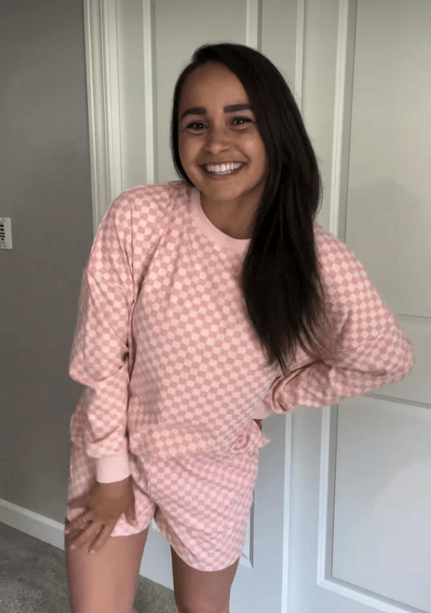

WORTHFOLLOWING
REAL MOTHERHOOD
MomLife With Lizzy
@momlife.with.lizzy
“This feels like the internet version of
‘come sit with us.’”
Lizzy has created a little corner of Instagram that feels less like a feed and more like a place for moms to actually connect. From Social Sunday posts to conversations about finding women in similar seasons of motherhood, her content makes that first hello feel a little easier.
MEET HER →